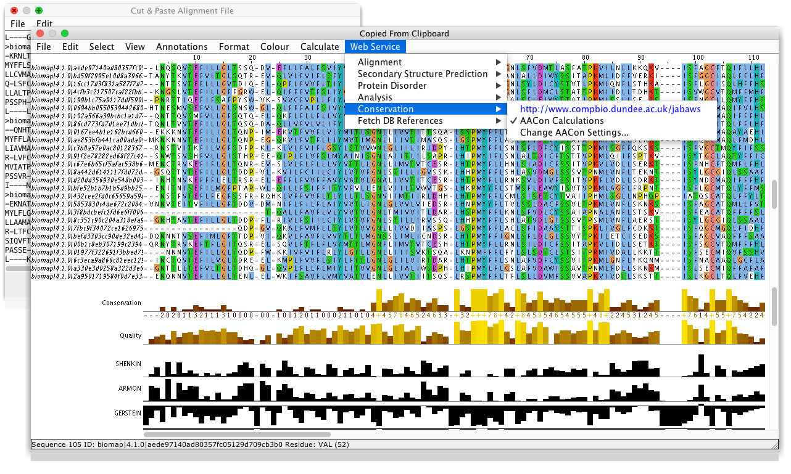

Getting Started¶
AACon is a set of tools implementing 17 different conservation scores reviewed by Valdar as well as the more complex SMERFS algorithm for predicting protein functional sites (list of included methods). AACon has been written with efficiency in mind and takes less than a second to calculate conservation by all 18 methods for an alignment of 500 sequences 350 residues long on a single CPU. AACon exploits parallelism for the more demanding methods and to allow multiple methods to run simultaneously. The parallel code gives close to linear speedup with the number of processors, thus making it suitable for server applications or other demanding environments.
AACon is available as a SOAP web service, a stand alone Java executable and a Java library with concise API for accessing all the conservation methods programmatically. The executable runs on all platforms that support Java version 6 and above (Windows, Unix/Linux, Mac).
Since December 2011, over 15,000 AACon calculations have been performed through the popular sequence analysis program Jalview and JABAWS servers.
Benefits¶
- Implements 17 different conservation score metrics from Valdar’s paper in addition to SMERFS.
- Can be deployed on most operating systems, as a Tomcat Java Web Application or Standalone executable client.
- Can be accessed from Jalview using its graphical client, or using the JABAWS command line client, in addition to the AACon standalone client.
- Takes advantage of parallelisation techniques to improve the speed of demanding analysis.
- Local or intranet installation eliminates any security concerns you might have about sending sensitive data over the internet.
Distributions¶
Tip
To help you choose the AACon distribution that better suits your needs read on the quick-start guides below.
I want to use AACon for…
- Jalview and JABAWS - Running AACon services through Jalview via a public or private JABAWS server
- Standalone Client - Running AACon from the command line using the AACon Standalone Client
- Web service - Running AACon Web Service Client
Jalview and JABAWS¶
Jalview is a multiple sequence alignment and analysis application that can be used as a graphical AACon client (via JABAWS). Jalview provides the same AACon functionality as the JABAWS Command Line Interface (CLI) client. Simply launch Jalview and run any of the methods provided under the ‘Web Service >> Conservation’ menu. Jalview uses the public JABAWS server by default, but by running the JABAWS Virtual Appliance (VA) or JABAWS Web Application aRchive (WAR) in your local infrastructure, a private server can also be used. Alternatively, AACon can be run using its dedicated Standalone Client or Web Service Client.
{kind=link}
Standalone Client¶
The standalone executable is for calculating conservation from the command line. The Java library provides simple API for the Java developers who wants to have AACon functionality from their applications. The executable and the library comes from the same jar file and will work on any operating system that supports Java.
Command line executable and the Java library: download
Help with a command line client is available from standalone executable page. The library is described on the library page.
Web service¶
The AACon web service, is a standard SOAP web service and thus you can use your favourite programming language to access it. To simplify the use of web service even further, we offer a Java web service client. This client can submit the tasks to a web service, retrieve the results and thus can be used in place of the command line client. Alternatively, it can serve as an example of coding against AACon web service.
Web service client: download
Please refer to the web service help page for help on using the AACon web service.